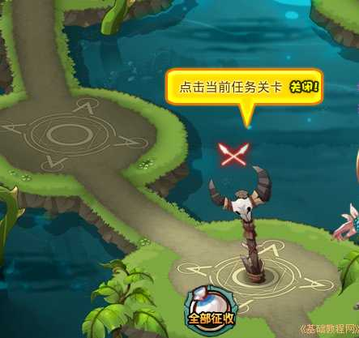
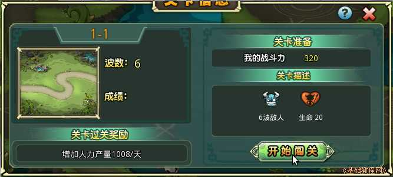
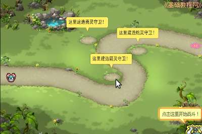
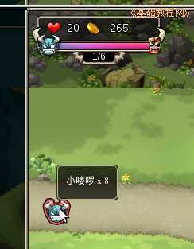
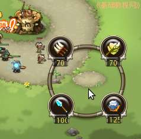
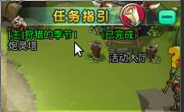

塔防游戏部落守卫战新手攻略
作者：TeliuTe 来源：基础教程网
三、猎场 返回目录 下一课猎场是跟怪物作战的场所，战斗胜利后可获得通关奖励，猎场还可以源源不断生产资源；
1、猎场
1）点击右上角“猎场”按钮，或者点击右侧任务列表中的猎场通关任务，即可进入猎场；
2）在猎场中有一些竖立的桅杆，包含四个关卡，点击桅杆，再在出来的对话框中点“开始闯关”进入作战场景；
 
3）进入作战场地后，按提示建好各种防御塔，然后点右下角的开始图标，也可以点小图标看看怪物的各类和数量；

4）左上角显示了自己的生命值和怪物的攻击波次，鼠标移到起点的小图标上，可以查看怪物种类和数量；

5）战斗中可点左下角的增援部队和火流星来消灭怪物，重复增援要花费一定的时间，火流星要稍微在怪物前面一点释放；
6）消灭怪物可以获得金币，当左上角金币数足够时，点击小坑可以建立新的防御塔或升级现有的塔；

7）战斗胜利后，如果生命值在18以上，就可以获得三颗星奖励，点“继续”回到猎场；
8）这时可以点击下一关，也可以点下边的“全部征收”，收获猎场生产的资源，还可以点右上角的关闭，回到大厅任务列表中点取奖励；
9）隔一段时间就可以到猎场中，收获猎场生产的资源，在大厅的任务列表中，点击战斗任务赢得奖励；

本节学习了狩猎场的基础知识，如果你成功地完成了练习，请继续学习下一课内容；
本教程由86团学校TeliuTe制作|著作权所有
基础教程网：http://teliute.org/
美丽的校园……
转载和引用本站内容，请保留作者和本站链接。